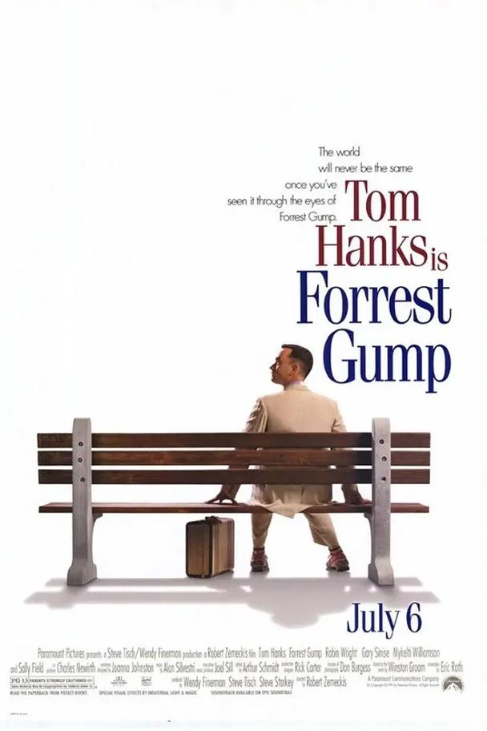

电影1
改编自非小说类书籍《花月杀手》，聚焦美国西进运动中被剥削的原住民历史，格局很大，片长很长，口碑争议也不小。

电影2
《阿甘正传》改编自美国作家温斯顿·格鲁姆于1986年出版的同名小说 [1]，讲述了智商只有75的阿甘如何凭借纯真善良和坚持不懈的精神，从童年的欺凌中跑出一条人生道路，成为大学橄榄球明星、越战英雄，经历多次与挚爱珍妮的悲欢离合，无意中参与重大历史事件，最终成为成功的企业家和父亲，展现了一个普通人在非凡时代背景下的非凡人生旅程。